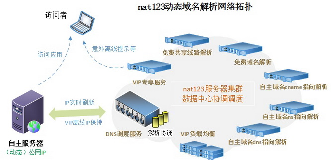
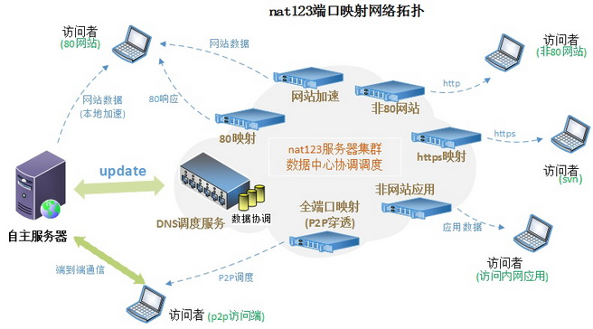
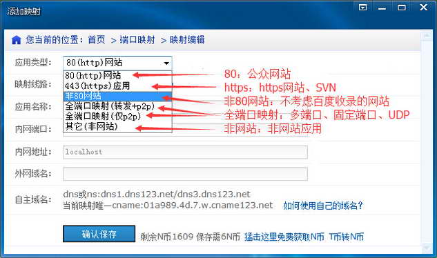

实际上两种都用到了：
1，服务提供商（123NAT，花生壳）做Proxy转发
2，两个私网地址直接连接：STUN 和TURN
使用动态域名解析还是端口映射
什么情况下使用动态域名解析？什么情况下使用nat123端口映射？
概述：
1，本地有公网IP时，使用动态域名解析。动态解析后，域名访问走本地带宽，80端口是否可用等以本地网络环境是否支持为准；即动态域名解析不能解决80端口被屏蔽的问题；必须要有公网IP才能使用动态域名解析，且如经过路由器需有路由器管理权限。
2，端口被屏蔽和内网环境，使用nat123端口映射。任何可上网环境都可以使用nat123端口映射；使用80映射可以发布80网站；使用非80映射可以发布网站应用到外网；支持所有端口协议应用。
以下是详细：
不同的本地网络环境可以使用不同的方案，充分发挥本地带宽优势。
环境一，小习本地是ADSL网络，路由分配的是动态公网IP，且80端口是正常的。如何做网站服务，如何实现外网访问内网应用？
使用nat123动态域名解析即可。将域名实时解析到本地公网IP，即使公网IP变化，也不会影响到域名的正常使用。同时还需要在路由做下路由映射，将外网需要访问的端口，映射到内网对应应用服务器。
环境二，小李家是ADSL，路由分配的是动态公网IP，但80端口被某某封了。怎样外网访问内网应用？如何做大众网站服务？
访问内网应用：使用nat123动态域名解析。将域名实时固定解析到本公网IP后，即可通过域名进行访问。
做大众网站服务：使用nat123端口映射80映射+本地公网IP加速。本地加速后，网站数据加载是直接走本地IP的，可以发挥本地带宽优势。
环境三，小温家是长城带宽，100M独享，但是路由分配的IP是10开头的，是经过网络运营商NAT转发的内网IP。如何做网站服务？如何实现外网访问内网应用？
做大众网站服务时，使用80映射+网站加速。
外网访问内网应用时，使用nat123端口映射，将内网应用地址映射到外网域名。
环境四，小胡自己也不知道自己本地是什么网络环境，只知道可以上网。如何发布网站到外网？如何让外网其他盆友访问他电脑应用？如何与远在他乡的基友进行游戏开服联机？
做大众网站服务时，使用80映射+网站加速。
外网访问内网应用时，使用nat123端口映射，将内网应用地址映射到外网域名。
nat123动态域名解析使用场景：
1.本地(动态)公网IP时，且本地公网80端口正常时，可用动态域名解析，发布80大众网站。
2.本地(动态)公网IP时，但本地公网80端口被屏蔽时，发布非大众网站，外网访问时用非80端口。
3.本地(动态)公网IP时，外网访问内网应用。

nat123端口映射使用场景：
1.80端口被屏蔽时。
2.无公网IP时。
3.其他任何环境。

选择什么映射类型
使用nat123映射，根据自己应用类型，选择最适合的映射线路，可以提升应用访问速度和稳定。

四，多端口、固定端口、UDP应用：选择使用全端口映射。
1，需要在访问端同时使用访问者。
2，不需要改变访问端口。
3，访问目标主机任意固定端口应用。
4，支持所有协议。包括tcp/udp/http/https/ftp/广播通信/等。
5，全端口映射转发p2p是有服务器支持稳定VIP模式，需购买支持全端口映射的VIP使用。
6，点到点模式，穿透不限速。穿透失败走转发，由(购买)服务端带宽和本地带宽速度决定。